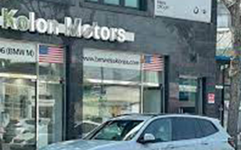

홈
>
회사소개
>
회사연혁
회사연혁

2011~2021
- 2021
- 코오롱하늘채, 제26회 베스트 브랜드&패키지 디자인 어워드
브랜드디자인부문 대상 수상 - 라비에벨중국복합문화타운㈜, 한중문화타운㈜으로 상호변경
- 코오롱제이모빌리티㈜ 설립
- 2020
- '2020년 대한민국 국토대전 사회기반시설 부문' 국토교통부장관상 수상
- '국제건축대상 2020' 기업업무빌딩 부문 수상
- 라비에벨중국복합문화타운㈜ 설립
- 코오롱모듈러스㈜ 주식 인수
- 코오롱오토케어서비스㈜ 주식 인수
- 코오롱모듈러스㈜, 코오롱이앤씨㈜로 상호변경
KOLON ONE & ONLY
- 2019
- '2019년 한국건축문화대상' 공동주거부문 대상(대통령상) 수상
- '2019 이데일리 건설산업대상' 건축부문 대상 수상
- 한국토지주택공사 교통시설부문 우수업체 선정
- 2018
- 서울시 주관 '서울시 건축상' ONE&ONLY타워 신축부문 최우수상 수상
- 코오롱하우스비전㈜ 분할
- 리베토 코리아㈜ 설립
- Libeto Pte. Ltd. 설립
- 2017
- 한국토지주택공사 주관 ‘2017년 우수시공업체 시상’ 환경시설분야 수상
- BMW 김해AS지점 오픈
- BMW 부천지점 오픈
- BMW 김해지점 오픈
- 2016
- '제9회 건설기술연구 우수사례 발표회' 건설기술연구원장상 수상 (환경 부문)
- '제6회 한국리모델링 건축대전' 한국외국어대 글로벌캠퍼스 어문학관
그린 리모델링 준공부문 대상 - 커먼그라운드 독일 'iF 디자인상' 건축 및 브랜드 아이덴티티 부문 수상
- BMW 구미 복합 전시장(Sales/AS) 오픈
- BMW M&D (Military & Diplomatic Sales) 평택 지점 오픈
- BPS (BMW Premium Selection) 부천 전시장 오픈
- BMW 의정부 복합전시장(Sales/AS) 오픈
- BMW 광주 광천 패스트레인샵(F/L) 오픈
- 2015
- 코오롱씨앤씨(주)를 흡수합병
- '제8회 건설기술연구 우수사례 발표회' 국회 국토교통위원장상 수상
(건축, 환경플랜트 부문) - '제5회 녹색건축 한마당 유공자 표창 시상식'
국가건축정책위원회 위원장 표창 수상 - BMW 오포 A/S 센터 오픈
- BMW 순천 전시장 오픈
- BPS (BMW Premium Selection) 광주, 부산 전시장 오픈
- BMW 삼성 전시장 확장 이전 오픈, MINI 삼성 전시장 오픈
- BMW 대구수성 패스트레인샵(F/L) 오픈
KOLON MOTORS BMW
- 2014
- IR52 강관 록볼트 장영실상 수상
- MINI 서초 A/S 센터 오픈
- BPS (BMW Premium Selection) 성동 전시장 오픈
- BMW 광주 A/S 센터 확장/이전
- 2013
- 2013 굿디자인 우수상 수상 (산업통상자원부)
- IT사업 양수도
- 한국환경산업기술원 주관 환경기술개발사업
'우수성'과 시상식 '올해의 환경기술 최우수상' 수상 - MINI 서초 전시장 오픈
- Motorrad 전시장 오픈
- 2012
- 대통령표창 (친환경주택 건설기술 및 신자재 개발대상, 코오롱건설)
- BMW 역삼 패스트레인샵(F/L) 오픈
- 2011
- MINI 대구 전시장 오픈
- 코오롱글로벌주식회사 출범
- 코오롱건설, 코오롱아이넷, 코오롱B&S합병, 대형 종합법인 출범
- 굿 디자인(GD)선정제품 디자인 우수상 (지식경제부, 코오롱건설)
- BMW 대구 전시장 이전/오픈
- BMW 광주 전시장 이전/오픈
2010~2000
- 2010
- 환경부장관상 (건설기술의 날, 코오롱건설)
- LH 건축시설 우수시공업체 (코오롱건설)
- BMW 분당 전시장 이전/오픈
- BMW 부산 전시장 이전/오픈
- 2009
- 대통령상 (국가품질경영대회 고객만족부문, 코오롱스포렉스)
- 최우수상 (대한민국 주거서비스대상, 코오롱건설)
- BMW 대전 전시장 이전/오픈
- 2008
- 국토해양부 표창 (건설의 날, 코오롱건설)
- BMW 대치 A/S 센터 오픈
- BMW 분당 A/S 센터 오픈
- BMW 분당 전시장 오픈
- 2007
- BMW 교대 A/S 센터 오픈
- BMW 삼성 전시장 이전/오픈
- 2006
- 코오롱아이넷출범
- 코오롱인터내셔널과 코오롱정보통신 합병
- 대한민국 스포츠산업 대상 (코오롱스포렉스)
- 2005
- 코오롱글로텍, HBC코오롱합병
- 대통령 표창 (도로의 날, 코오롱건설)
- 2004
- R-R (Rolls-Royce) 청담 전시장 오픈
- 2003
- 건설교통부장관 표창 (건설의 날, 코오롱건설)
- BMW 강남 A/S 센터 오픈
- BMW 순천 A/S 센터 오픈
- 2002
- 코오롱모터스, HBC코오롱으로 사명 변경
- BMW 삼성 전시장 오픈
- 2001
- 코오롱상사, 기업분할
(FnC코오롱주식회사, 코오롱인터내셔널주식회사, 코오롱CI주식회사) - 코오롱엔지니어링 흡수합병
- 대한민국건설기술인 대상 (코오롱건설)
- 대통령 표창 (도로의 날, 코오롱건설)
1990~2000
- 2000
- 코오롱건설㈜
코오롱엔지니어링 합병 (환경,엔지니어링 부문 역량강화)
- 1999
- BMW M&D (Military & Diplomatic Sales) 용산 지점 오픈
- 1998
- 대통령상 (살기 좋은 아파트, 코오롱건설)
- 1997
- 한국건축문화대상 (코오롱타워, 코오롱건설)
- BMW 부산 A/S 센터 오픈
- BMW 부산 전시장 이전/오픈
- BMW 대구 A/S 센터 오픈
- BMW 대전 A/S 센터 오픈
- BMW 대전 전시장 이전/오픈
- 1996
- 산업훈장 (철탑, 서해안고속도로 개통기여, 코오롱건설)
- 최우수상 (한국산업안전공단 무재해추진경영대회, 코오롱건설)
- BMW 대전지점 오픈
- 1995
- 최우수기업 (한국능률협회, 인터네셔널)
- BMW 광주 전시장 오픈
- 1994
- BMW 대구 전시장 오픈
- 1990
- 코오롱정보통신 설립
- BMW 부산 전시장 오픈
1990이전
- 1989
- 코오롱모터스 설립
- 1988
- 산업훈장 (석탑, 부산지하철 1호선 3단계 성공적 수행, 코오롱건설)
- 1987
- 산업훈장 (호남선 복선공사 성공적 수행, 동탑, 코오롱건설)
- BMW 강남 전시장 오픈
- BMW 성산 A/S 센터 오픈
- 1986
- 코오롱건설, 삼경개발주식회사 합병 (종합건설회사로서의 역량 강화)
- 1985
- 산업포장 (코오롱건설)
- 1984
- 코오롱스포렉스 설립
- 1982
- 코오롱종합건설, 코오롱건설㈜로 상호변경
- 산업훈장 (은탑, 건설진흥촉진, 코오롱건설)
- 1979
- 코오롱상사로 사명변경 (㈜코오롱상사와 ㈜삼경물산 통합)
- 산업훈장 (금탑, 수출1억불 달성, 코오롱상사)
- 1978
- 코오롱종합건설
- 1960
- 협화실업㈜ 설립 (코오롱건설㈜ 의 전신)
- 1954
- 개명상사 설립 (㈜코오롱상사의 모태이며, 코오롱그룹의 시발점)